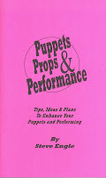

Enter "living"...
3/15/2009
{kind=link}

By Steve Engle
Make it a habit to always have your puppet animated the first instant he/she is seen by the audience...whether it's a fast entrance from "the wings," or merely being lifted from a case. If it's animal or bird, research some actions common to that species. For instance, I often bring out my buzzard with his beak pointed up and shaking his head back and forth - by just rotating my wrist. This activates the wings (which are attached to the head by fishing line) which gives the impression of him ruffling his feathers after just waking him up ... just like birds do!
* * * * * *
Reprinted from Puppets Props & Performance, just one of more than two dozen books I have listed now for eBay auctions ending Monday morning. See them all Here.
Make it a habit to always have your puppet animated the first instant he/she is seen by the audience...whether it's a fast entrance from "the wings," or merely being lifted from a case. If it's animal or bird, research some actions common to that species. For instance, I often bring out my buzzard with his beak pointed up and shaking his head back and forth - by just rotating my wrist. This activates the wings (which are attached to the head by fishing line) which gives the impression of him ruffling his feathers after just waking him up ... just like birds do!
* * * * * *
Reprinted from Puppets Props & Performance, just one of more than two dozen books I have listed now for eBay auctions ending Monday morning. See them all Here.